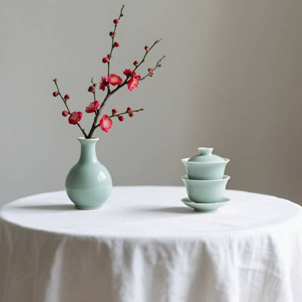
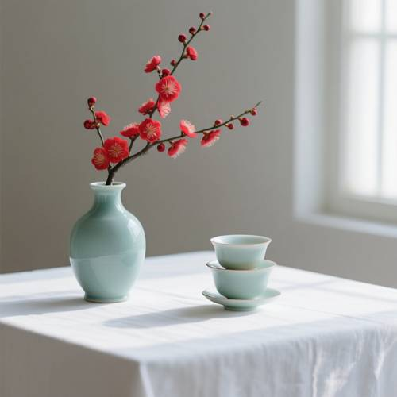
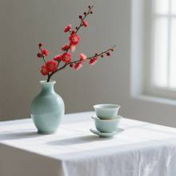

Entity Layout — On a white tablecloth, on the left side of the picture is a celadon va
On a white tablecloth, on the left side of the picture is a celadon vase with a red plum branch, and on the right are two stacked tea cups.

Direct — one call, no iteration

Continuum — Kimi K3 + Qwen-Image
Judge — Direct
FAILEntity Layout - Two-Dimensional Space — In the image, a celadon vase containing a red plum branch is positioned on the left side of a white-clothed table. To the right of the vase, there is a celadon lidded teacup (gaiwan) resting on a saucer. This is not two stacked tea cups as specified in the prompt, but a single teacup set. Therefore, while the vase is correctly placed on the left, the object on the right does not match the prompt's description, failing to meet the full layout requirement.
Judge — Continuum
PASSEntity Layout - Two-Dimensional Space — In the image, a light green, celadon-colored vase holding a branch with red blossoms is situated on the left side of the frame. To the right of the vase, and thus on the right side of the image, there are two tea cups of a similar color, with one stacked on top of the other, which sits on a saucer. This spatial arrangement aligns with the prompt's description.
What the agent did
Thinking
The user wants an image with: - White tablecloth - Left side: celadon vase with red plum branch - Right side: two stacked tea cups I need to use qwen-image for generation. Let me create a detailed visual prompt. Let me generate the image first.
Model
I'll generate this still-life scene with qwen-image.
Step 1 — `generate_image`
{
"prompt": "A serene still-life photograph on a clean white tablecloth. On the left side of the picture stands a celadon porcelain vase with a soft pale blue-green glaze, holding a graceful branch of red plum blossoms with vivid crimson-red flowers. On the right side of the picture are two stacked tea cups, one cup stacked on top of the other. Soft natural window light, gentle shadows on the white tablecloth, minimalist composition, calm and elegant atmosphere, high detail, photorealistic.",
"model": "qwen-image"
}
Result img_0

Thinking
The image looks very good. Let me check against the prompt: - White tablecloth ✓ - Left side: celadon vase with red plum branch ✓ (pale blue-green vase, red plum blossoms) - Right side: two stacked tea cups ✓ (two cups stacked, though there's also a saucer underneath — that's fine, the cups are stacked) The bottom cup sits on a small saucer, but the request was just "two stacked tea cups" — the saucer is a minor extra element. The composition matches: vase on left, cups on right. The cups look like they're stacked (one on top of the other). Let me inspect more closely to verify the cups are actually two cups stacked and not something odd. Actually, looking at it: there's a top cup, and a bottom cup below it, and a saucer at the very bottom. That's two stacked cups on a saucer. This satisfies "two stacked tea cups." The image is high quality, matches all elements. I could potentially remove the saucer but it's a natural part of a tea setting and doesn't violate the prompt. The prompt says "two stacked tea cups" on the right — present. This looks good enough. I'll mark it as best and stop. Actually, let me quickly zoom in on the cups to confirm they look right.
Model
The generated image looks quite good. Let me zoom in on the tea cups to verify the stacking detail.
My crop coordinates were off — the image is likely smaller than I assumed (it appears to be ~896 wide based on typical output, but let me use normalized coordinates). The cups appear to be at roughly x=0.55-0.78, y=0.55-0.75 of the image. Let me use normalized coordinates.
Model
The crop coordinates were off. Let me use normalized coordinates to inspect the cups.
The cups look good — two celadon tea cups stacked, with a saucer at the bottom. The stacking is clear: one cup nested on top of another. This matches "two stacked tea cups." All elements verified: - White tablecloth ✓ - Left: celadon vase with red plum branch ✓ - Right: two stacked tea cups ✓ The composition is clean, photorealistic, and matches the prompt. There's a small saucer under the cups which is a natural addition and doesn't violate the prompt. The image is good enough to submit. I'll mark img_0 as best and stop.
Step 4 — `mark_best`
{
"image": "img_0",
"reason": "All requested elements are present and correct: celadon vase with red plum branch on the left, two stacked tea cups on the right, white tablecloth, clean composition, high quality."
}
Thinking
The image is complete and marked as best. I'll stop here and summarize.
Model
The image is complete. It shows exactly what you described: - **White tablecloth** covering the table, softly lit by window light - **Left side**: a celadon porcelain vase with a pale blue-green glaze, holding a graceful branch of red plum blossoms - **Right side**: two celadon tea cups stacked one on top of the other (resting on a small saucer) The composition is clean and balanced with a calm, elegant still-life atmosphere. The result has been marked as the final image.